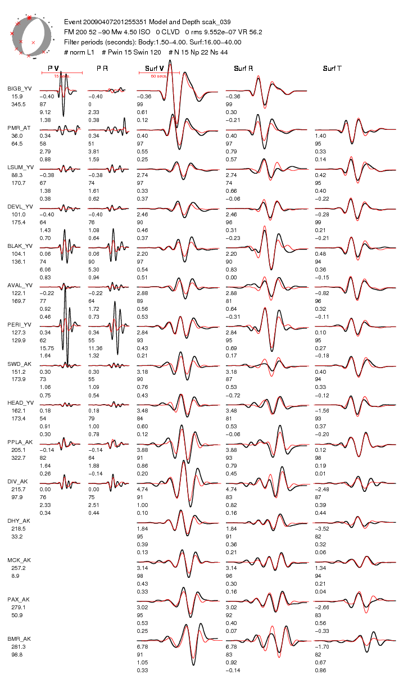

Moment tensor inversions
Moment tensor is a way of quantifying the relative motion on a planar fault and is represented by a 4-quadrant beachball that roughly mimics the pattern of the radiating wavefield.
The best moment tensor is obtained by minimizing the difference between the data with the synthetics. The synthetics are computed for all possible moment tensors using a 1D reference structural model. Different bandpass filters are applied to the body waves and surface waves when comparing the data with the synthetics.


Uncertainties in moment tensors(left) Waveform fits
between data (black) and synthetics (red) for an example
event in Anchorage (2009-04-07 20:12:55.351). The 'x' marked
on the beachball are the theoretical piercing points of the
emerging ray path to the stations.
(right) Best depth
estimate [centroid depth]. The inverted red triangle is the
best depth estimated by Alaska Earthquake Center (AEC) using
P-arrival times [hypocenter depth].
The confidence in moment tensor is quantified by comparing the normalized distribution of posterior samples, P(ω), with the normalized distribution of all samples, V(ω), where ω is a angle between two moment tensors.
Construction of the confidence curve P(V) for a moment tensor M0.

(left) The fractional volume
and probability curves V(ω) and P(ω). The value P(V) is
defined in terms of V(ω) and P(ω) by requiring that P(V) =
P(ω) when V(ω) = V , as indicated by the arrows. The number
V(ω) is the fractional volume of the neighborhood NM0 (ω) of
moment tensors within angular distance ω of M0 , and P(ω) is
likewise the probability of NM0 (ω). Hence, P(V) is the
probability that the true moment tensor for the earthquake
lies in the neighborhood of M0 that has volume V ; large
P(V) for small V is desirable.
(right) The confidence curve P(V). The orange and brown trajectories correspond to those in Figure 4a. The area under the curve is our confidence parameter PAV . The 45∘ line (dashed) would be P(V) if the probability had been homogeneous.
(right) The confidence curve P(V). The orange and brown trajectories correspond to those in Figure 4a. The area under the curve is our confidence parameter PAV . The 45∘ line (dashed) would be P(V) if the probability had been homogeneous.
Compared to a normal earthquake of Mw 4 which has a source duration of ~1 second, duration for VLFEs of a similar magnitude event could go upto 15 seconds as in this case. Due to the lack of the high-frequency content many-a-times these events go undetected. The characteristic of a VLFE is the energy distribution in the long period (low frequency) of the spectrum, which allows one to perform source inversion using long-period surface waves.
For estimating the best source duration we search over varying bandpass and source duration.

(left) Waveform fits for a VLFE
event.
(right) Estimated variance reduction (a measure of fit between recorded and synthetic seismograms) for varying bandpass and source reductions. In this case, the best VR is obtained using 18-46 second filter and a 12 second source duration.
(right) Estimated variance reduction (a measure of fit between recorded and synthetic seismograms) for varying bandpass and source reductions. In this case, the best VR is obtained using 18-46 second filter and a 12 second source duration.
For performing a earthquake based tomographic inversion it is important to have reliable source mechanisms. We prepared a moment tensor catalog of >200 events (2007-2017) that are distributed in Alaska.
Undergraduate researchers Qingping Yu and Joshua Purba also contributed to this.

Distribution of moment tensors of similar mechanism in a clustered seismic zone can be used as a strong evidence for the presence of a fault. This is specially useful when faults are sub-surface or overlain by a layer of sediment as in a basin environment and there is no surface feature.
Moment tensor along with gravity and magnetic measurements are used to study the tectonic setting of such seismic zones.

(right) Illuminated are the regions of shallow crustal seismicity around Cook Inlet and Susitna basin, Alaska.
3D simulations
3D velocity model of southern Alaska (Eberhart-Phillips et. al. 2006) with shallow 1D velocity model of Cook Inlet basin (Shellenbaum et. al. 2010) embedded in it.
Synthetic waveforms filtered between 6-50s computed with (blue) and without (red) embedding the Cook Inlet basin.